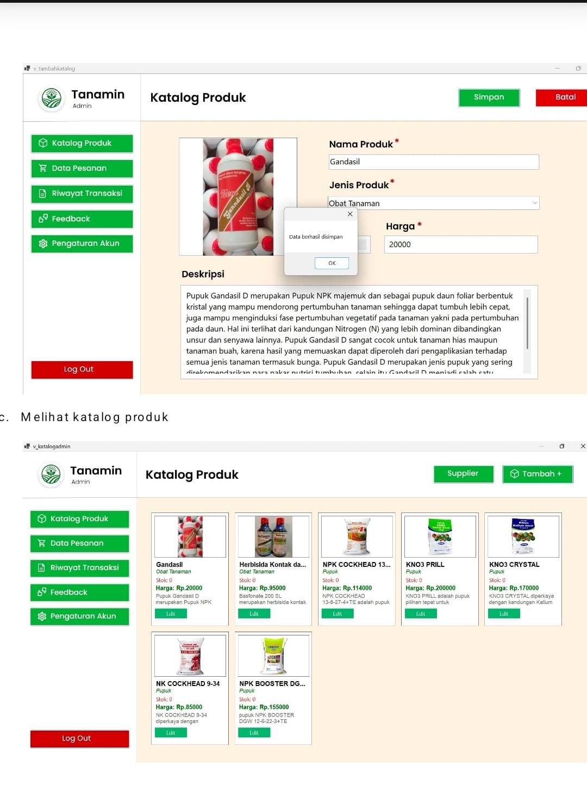

Tentang Saya
Saya adalah Mahasiswa Fakultas Ilmu Komputer jurusan Teknologi Informasi Universitas Jember. Saat ini saya berada di semester 3 perkuliahan. Saya tinggal bersama orang tua saya di Jember. Jember merupakan tempat kelahiran saya. Umur saya saat ini adalah 20 tahun dan saya adalah anak tunggal. Saya memiliki hobi bermain game seperti Mobile Legends, Roblox, dan lain lain.
Keahlian
- HTML - masih belajar
- CSS - masih belajar
- JavaScript - masih belajar
Projek yang Sudah Saya Buat

Ini adalah projek saya di semester lalu yaitu membuat program berbasis objek.
Yaitu aplikasi manajemen toko pertanian berbasis desktop dengan nama "Tanamin".
Contact yang Dapat Dihubungi
082131194150